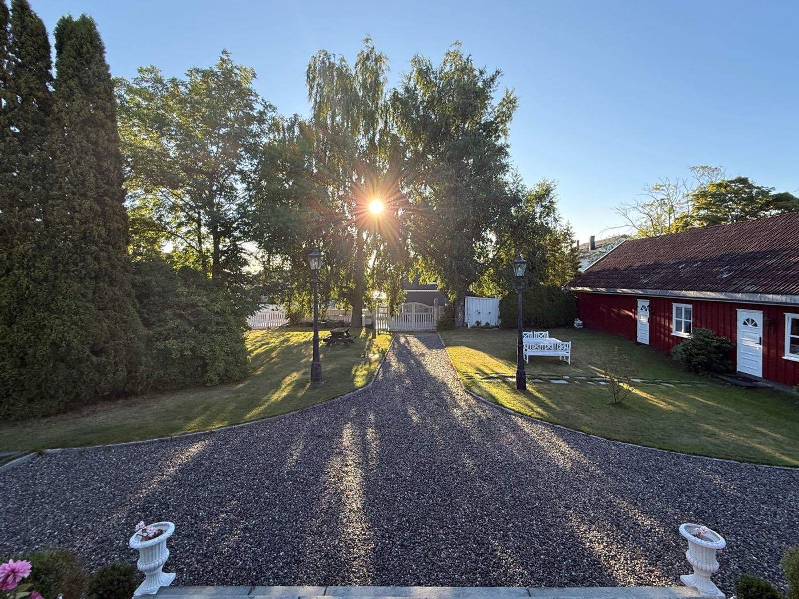
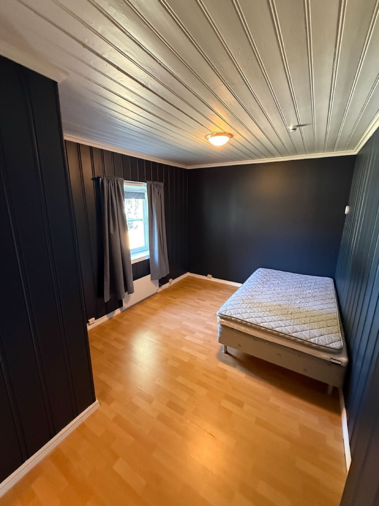
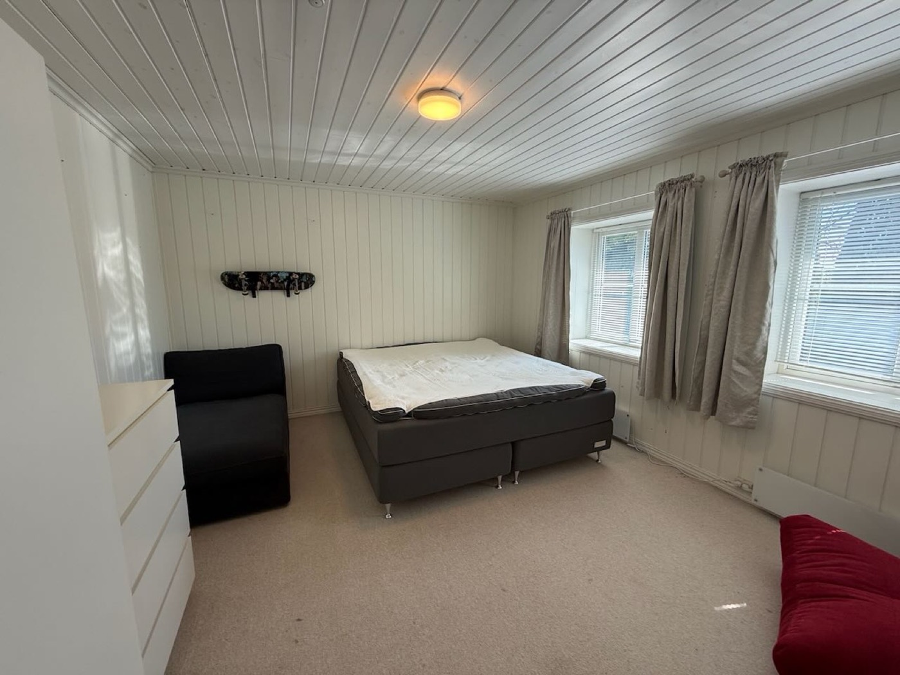
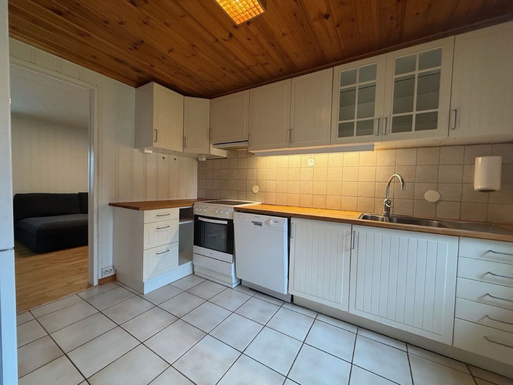
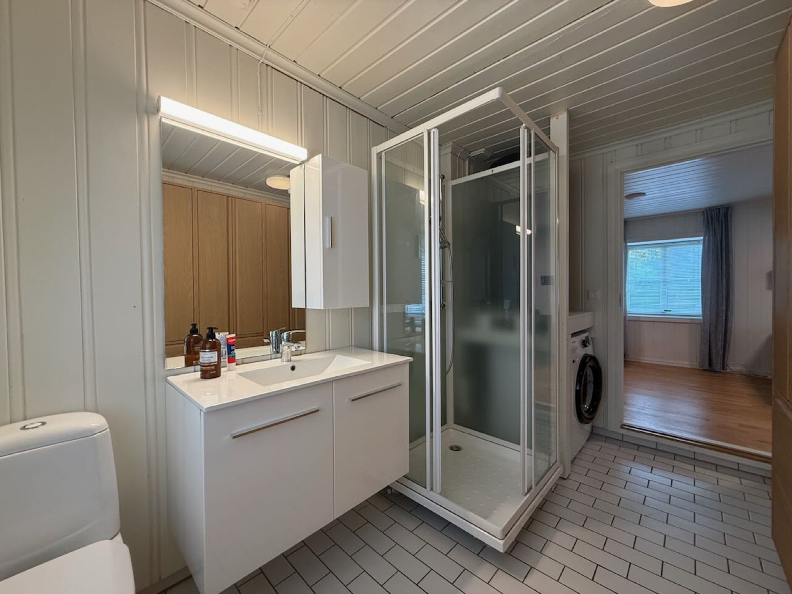
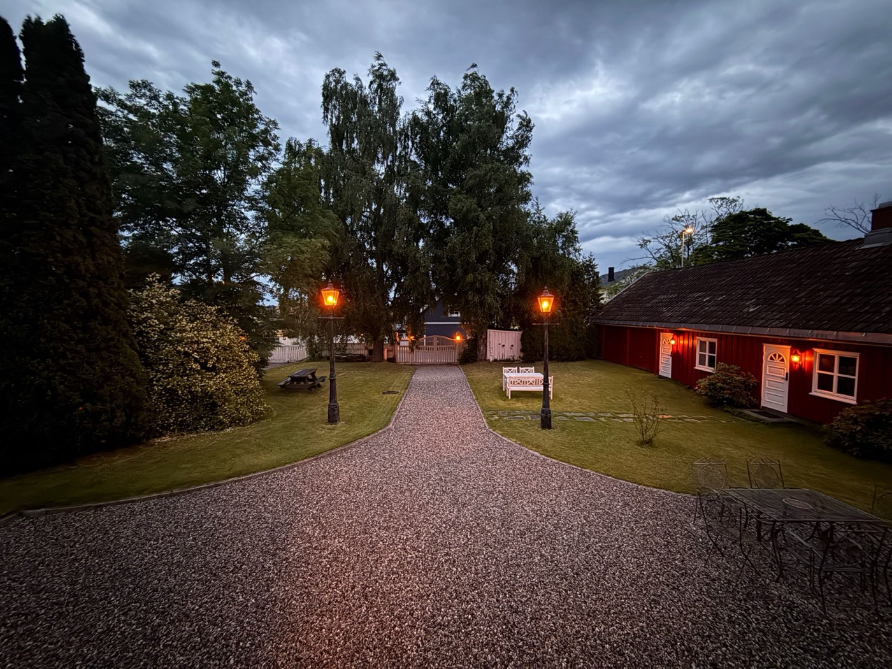

Nerdesign · komponenter
Komponenter
Klasser og markup-mønstre – kopier det du trenger
En komponent i Nerdesign er en CSS-klasse og et dokumentert HTML-mønster. Ingen rammeverk, ingen byggsteg. Dokumentkomponentene først, dashboardkomponentene under.
- Dokumenthode
- Nøkkelfakta
- Tabell
- Bilder og kort
- Galleri
- Merknad
- Kontakt
- Kolofon og fotnote
- Ark
- Etiketter
- Toppstripe
- Nøkkeltall
- Graf med datatabell
- Status
- Skjema
Dokumenthode
Overtittel i sperret versal, tittel i vekt 500, kursiv undertittel. Sentrert. .nd-header gir luft rundt; .nd-kicker, h1, .nd-subtitle gjør resten. Ingressen .nd-lead følger gjerne etter.
Eksempelgården · Kursoversikt
Vaskerom
Sikringsskap · kurs 1–13
Tretten kurser i skapet ved vaskerommet. Hovedsikringen sitter i teknisk rom.
<header class="nd-header"> <p class="nd-kicker">Eksempelgården · Kursoversikt</p> <h1>Vaskerom</h1> <p class="nd-subtitle">Sikringsskap · kurs 1–13</p> </header> <p class="nd-lead">…</p>
Overskrifter
h2 får det røde kvadratet og en strek under – det er systemets signatur og trenger ingen klasse. h3 og h4 er stillere.
Kurser
Teknisk rom
Løpende tekst i Iowan Old Style, 17 px, linjehøyde 1,6.
Nøkkelfakta
En <dl> i et rutenett der streken skinner gjennom en 1 px-gap. Tre kolonner som standard; .nd-keyfacts--2 og --4 finnes. Kollapser på smal skjerm.
- Hovedsikring
- 63 A
- Kurser
- 14
- Jordfeilbryter
- 30 mA
<dl class="nd-keyfacts"> <div><dt>Hovedsikring</dt><dd>63 A</dd></div> … </dl>
Tabell
.nd-table: hvit flate, versal-hoder, tynne streker, tfoot med tykkere toppstrek. .nd-num høyrestiller tall, .nd-key gir fet nøkkelkolonne, .nd-empty demper tankestreken for tomme verdier – husk skjermlesertekst. .nd-table--compact for tette ark, .nd-table--end høyrestiller siste kolonne (beløp).
| Post | Merknad | Kroner |
|---|---|---|
| Leie | Inkludert internett | [PRIS] |
| Strøm | Etter forbruk, egen måler | ikke oppgitt |
| Parkering | Én plass på tunet | 0 |
| Sum faste | [PRIS] |
<table class="nd-table nd-table--end">
<caption>Månedskostnad</caption>
<thead><tr><th>Post</th><th>Merknad</th><th>Kroner</th></tr></thead>
<tbody>
<tr><td class="nd-key">Leie</td><td>…</td><td>12 000</td></tr>
<tr><td class="nd-key">Strøm</td><td>…</td>
<td class="nd-empty"><span aria-hidden="true">–</span><span class="nd-sr-only">ikke oppgitt</span></td></tr>
</tbody>
<tfoot><tr><td>Sum</td><td></td><td>12 000</td></tr></tfoot>
</table>
Bilder og kort
Alle bilder i .nd-hero, .nd-figure-card, .nd-gallery og .nd-two-col åpnes i en lysboks (PhotoSwipe) når nd-lightbox.js er lastet – klikk på et bilde her. Bildeteksten hentes fra figcaption.

.nd-hero med .nd-caption..nd-hero for et fullbreddebilde med .nd-caption under. .nd-figure-card er et <figure> med ramme, 4:3-bilde og en figcaption der <strong> blir tittel. Legg kortene i .nd-grid. .nd-two-col setter bilde og tekst side om side.



<div class="nd-grid" style="--nd-min: 260px">
<figure class="nd-figure-card">
<img src="soverom-1.jpg" alt="Soverom med dobbeltseng og vindu mot tunet">
<figcaption><strong>Soverom 1</strong>Mot tunet, plass til dobbeltseng.</figcaption>
</figure>
</div>
Galleri
.nd-gallery: to kolonner på skjerm, tre på papir. Et odde siste bilde fyller hele bredden i stedet for å stå alene. Bildetekster er kursive og dempet.



Merknad
.nd-note er den eneste innrammede boksen. En h3/h4 inni får aksentfargen. --warn og --error farger rammen – og teksten sier alltid hvorfor.
Til foresatte
Leieavtalen signeres av eleven, men vi ber om at en forelder står som medansvarlig.
Advarsel
Kurs 5 og 6 er reservert varmepumpe og ladeboks – ikke flytt disse uten elektriker.
Kontakt
.nd-contact: to sentrerte kort med en kort rød strek under navnet. Lenker uten understrek til de får fokus eller pekeren over.
Eksempelgården
[Adresse]
Jeløya, Moss
Kolofon og fotnote
footer.nd-colophon avslutter en side; .nd-footnote avslutter et ark. Begge kursive, dempet, med en strek over.
Eksempelgården · oppdatert august 2026
Ark
.nd-sheet er et fysisk ark: et kort med ramme på skjermen, nøyaktig én side på papir, med sideskift etter. .nd-sheet--a5 for A5. .nd-sheet--fixed låser arket til 210 × 296 mm med egne marger og lar ingen barn krympe – blir det for fullt, klippes bunnen synlig, som er et ærligere symptom enn stille krymping. .nd-bottom limer et felt til bunnen av et fast ark. Siste ark får .nd-sheet--last så det ikke kommer en tom side. Faste ark og etikettark er forhåndsvisninger av papir og vises alltid lyse, også i mørkt tema – legg .nd-paper på andre elementer som skal oppføre seg slik.
Eksempelgården
Slik bruker du varmepumpa
Heng i teknisk rom
- La den stå på «Auto» – den styrer seg selv.
- Ikke skru på panelovnene i tillegg.
- Rødt lys: ring [telefon].
Oppdatert august 2026
Se eksemplene for en fire siders kursoversikt og et fast A4-ark – begge med PDF.
Etiketter
.nd-label-sheet er et ark med klistrelapper i faste mål. Sett --nd-label-w, --nd-label-h og --nd-label-cols etter etikettproduktet (standard 70 × 37 mm, 3 kolonner = 24 per A4). Hver .nd-label har overtittel, en sterk linje og en forklaring. På skjerm vises kanter; på papir er de borte.
Sikringsskap · vaskerom
Kurs 1 · 20 APlatetoppTeknisk rom
Stoppekran · hovedvannVri med klokka for å stengeNettverk
Fiber innIkke koble fra<div class="nd-label-sheet" style="--nd-label-w: 70mm; --nd-label-h: 37mm; --nd-label-cols: 3">
<div class="nd-label">
<p class="nd-kicker">Sikringsskap · vaskerom</p>
<strong>Kurs 1 · 20 A</strong>
<span>Platetopp</span>
</div>
…
</div>
Dashboard
Dashboardkomponentene bruker de samme rollene som dokumentene, men tall settes i monospace og flatene er panelet. Se alt sammen i dashboard-eksempelet med ekte grafer.
Toppstripe og periodevelger
.nd-topbar med .nd-brand til venstre og .nd-topbar-actions til høyre. .nd-segmented er en gruppe knapper der den valgte har aria-current="true".
Eksempelgården · Hovedhuset
<nav class="nd-segmented" aria-label="Periode"> <button type="button">24 t</button> <button type="button" aria-current="true">7 d</button> … </nav> <button class="nd-button nd-button--primary">Logg inn</button>
Nøkkeltall
.nd-stat med etikett, verdi (monospace, tabulære siffer) og en dempet underlinje. Legg dem i .nd-stats. --hero for det ene tallet et dashboard leder med.
Effekt nå
3,8 kW
Snitt 7 d · 2,9 kW
Vanntemperatur
27,4 °C
Varmepumpe på
pH
7,2
Innenfor 7,0–7,4
<div class="nd-stat"> <p class="nd-stat-label">Effekt nå</p> <p class="nd-stat-value">3,8 <span class="nd-stat-unit">kW</span></p> <p class="nd-stat-sub">Snitt 7 d · 2,9 kW</p> </div>
Graf med datatabell
section.nd-chart med .nd-chart-header (tittel med kvadrat), .nd-chart-canvas (ECharts tegner her; role="img", tabindex og aria-label settes av nd.mount), en .nd-chart-footer med .nd-datatable-toggle, og .nd-datatable som fylles fra de samme dataene. Tabellen er ikke valgfri – den er slik grafen leses uten syn, og slik den skrives ut.
<section class="nd-chart" aria-labelledby="c1-h">
<div class="nd-chart-header"><h2 class="nd-chart-title" id="c1-h">Forbruk siste 7 dager</h2><p class="nd-freshness">kW per time</p></div>
<div class="nd-chart-canvas" id="c1" aria-label="Linjediagram: effekt per time siste sju dager"></div>
<div class="nd-chart-footer"><button class="nd-button nd-datatable-toggle" aria-expanded="false" aria-controls="c1-t">Vis datatabell</button></div>
<div class="nd-datatable" id="c1-t" hidden tabindex="0"></div>
</section>
<script src="vendor/echarts.min.js"></script>
<script type="module">
import * as nd from './nd/nd-echarts.js';
nd.wireDataTables();
nd.mount(echarts, document.getElementById('c1'), (t) => ({
...nd.base(t), legend: { top: 0 },
xAxis: nd.timeAxis(t), yAxis: nd.valueAxis(t, 'kW'),
series: [{ type: 'line', name: 'Hovedhuset', data }],
}), { table: () => ({ headers: ['Tid', 'kW'], numeric: [1], rows }) });
</script>
nd.mount registrerer temaet fra tokens, tegner, lytter på temabytte (og tegner på nytt – ECharts binder tema ved init), følger prefers-reduced-motion, og bygger datatabellen med textContent, aldri HTML.
Status og ferskhet
.nd-status--ok/warn/error/info er en prikk pluss et ord. .nd-freshness forteller når data sist ble hentet – bruk <time datetime>.
Sist oppdatert
tilkobletforsinketfrakobletoppdaterer
Skjema
.nd-form og .nd-field: etikett over feltet, 40 px høye kontroller, fokusramme i aksentfargen. Feilmelding i .nd-form-error med role="alert".